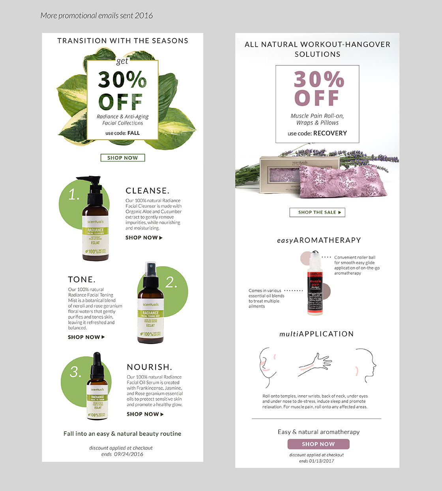

Digital Marketing - Email Subscriptions
Process

In order to increase online presence of the company, one of the major marketing campaigns I was responsible for was retail email subscriptions. The 2015 email designs were quite neglected; there was no proper formatting, branding and promo focus of any kind. It was my responsibility to design emails with various promotions every week, along with reminder emails and website banners to go with the sales.
My participation in the email campaign began from June 2016 to Dec 2016. During this time, some A/B testing was done to get a better understanding of the current demographics' interests and buying habits. While there were some interesting results, there was not enough subscribers to deduce any solid conclusions.
But these campaigns did serve their purpose; to remind consumers of the company's online presence. Three months into the campaign, open rates and click-through's beat the industry's average by 1.1% and more frequent purchases were being made. But towards the end of the fifth month, unsubscription rates began to go up. It was clear that subscribers were beginning to feel spammed at the high frequency of emails.
